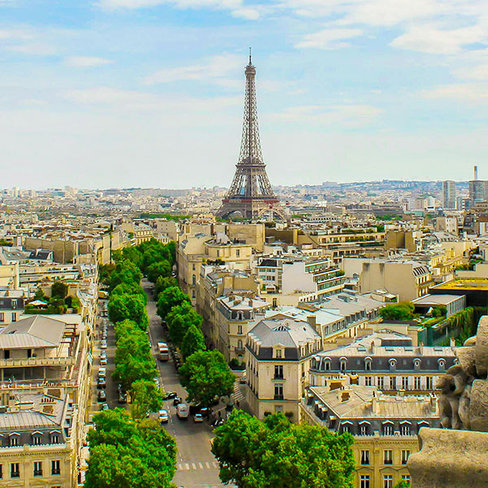
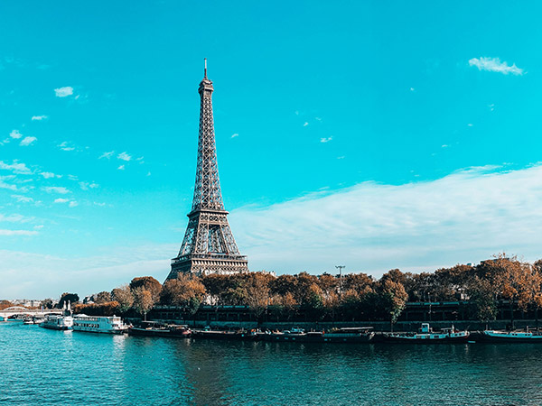
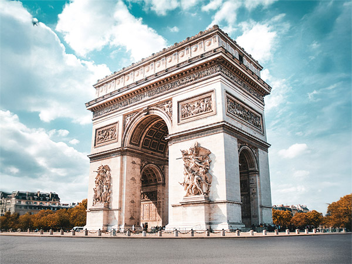
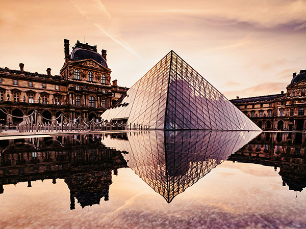
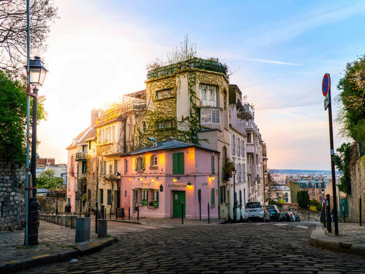
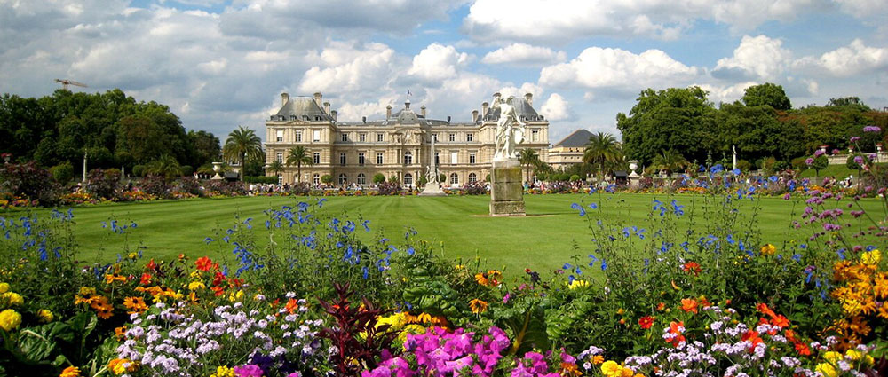

Průvodce Paříží
Historické památky
Eiffelova věž

Symbol Paříže a zároveň jeden z nejznámějších památníků světa. Postavena byla Gustave Eiffelem pro Světovou výstavu v roce 1889 a od té doby se stala ikonou města. Věž je vysoká 324 metrů a nabízí návštěvníkům dechberoucí výhled na město. Večer se věž rozzáří tisíci světly, což vytváří nezapomenutelný zážitek.
Původně však byla věž mezi Pařížany kontroverzní, mnozí ji dokonce považovali za nevzhlednou. S postupem času se však stala milovaným symbolem francouzské hrdosti a inženýrského mistrovství. Věž disponuje třemi úrovněmi přístupnými veřejnosti, přičemž v první a druhé najdete restaurace a obchůdky se suvenýry. Každý rok věž navštíví miliony turistů z celého světa, a tak je dobré naplánovat návštěvu s předstihem, aby se zabránilo dlouhým frontám.
Vítězný oblouk
Tato monumentální stavba na konci slavného bulváru Champs-Élysées připomíná válečné vítězství Napoleona Bonaparta. Z vrcholu oblouku můžete obdivovat panoramatický výhled na celou Paříž, včetně historických tříd a městských dominant.

Arc de Triomphe byl dokončen v roce 1836 a je zdobený reliéfy znázorňujícími významné bitvy a vojenská vítězství. Pod obloukem se nachází hrob Neznámého vojína, který připomíná vojáky padlé během prvn śwové války. Každý večer zde hoří věčný plamen jako symbol vzpomínky.
Bulvár Champs-Élysées, který se rozprostírá od Vítězného oblouku až k náměstí Place de la Concorde, je jednou z nejznámějších a nejnavštěvovanějších ulic na světě. Toto místo je centrem nejen turistického, ale i společenského života, plné luxusních obchodů, kaváren, kin a restaurací. Každoročně se zde koná mnoho akcí, včetně slavné vojenské přehlídky na Den dobytí Bastily a velkolepé oslavy Silvestra.
Kulturní klenoty
Muzeum Louvre

Louvre je největší muzeum umění na světě a domovem slavné Mony Lisy od Leonarda da Vinciho. Sbírka muzea obsahuje tisíce uměleckých děl od starověku až po 19. století. Samotná architektura Louvru je ohromující, zejména proslulá skleněná pyramida, která se stala symbolem muzea.
Budova původně sloužila jako královský palác a jeho historie sahá až do středověku. Louvre se skládá z několika oddělení, včetně egyptských starožitností, řeckého a římského umění, evropského malířství a sochařství. Prozkoumat celé muzeum během jediné návštěvy je téměř nemožné, a proto je dobré návštěvu předem naplánovat. Vedle uměleckých pokladů stojí za pozornost i nádherné interiéry a zahrady, které muzeum obklopují.
Montmartre a bazilika Sacré-Cœur
Romantická čtvrť Montmartre je proslulá svými úzkými uličkami, kavárničkami a malebnou atmosférou, kterou tolik milovali umělci jako Picasso nebo Van Gogh. Na vrcholu kopce stojí bazilika Sacré-Cœur, odkud se otevírá jeden z nejkrásnějších výhledů na město.

Bazilika byla postavena na přelomu 19. a 20. století jako symbol naděje po francouzsko-pruské válce. Stavba dominuje pařížskému panoramatu díky své bílé barvě, způsobené použitím zvláštního vápence, který se při kontaktu s vodou sám čistí. Montmartre má svůj specifický ráz - najdete zde pouliční umělce, malé galerie, bohémské kavárny a vinárny, které dokreslují nezaměnitelnou atmosféru této části Paříže.
Zelené oázy
Lucemburské zahrady
Tento rozsáhlý park v srdci Paříže je ideálním místem pro odpočinek. Zahrady obklopují Lucemburský palác, dnes sídlo francouzského Senátu. Návštěvníci si zde mohou užívat pikniky, relaxovat u fontán či se procházet mezi květinovými záhony a sochami.

Zahrady byly vytvořeny v 17. století na přání Marie Medicejské, která toužila po připomenutí své rodné Florencie. Dnes zde návštěvníci naleznou klidné prostory s lavičkami ve stínu stromů, jezírko, kde děti pouštějí modely loděk, a různá sportoviště. Zahrady jsou také oblíbeným místem setkávání studentů, rodin i turistů, kteří chtějí načerpat sílu uprostřed rušného města.
Nezapomenutelný zážitek
Paříž je město, které vás pohltí svou krásou, elegancí a nezaměnitelným kouzlem. Ať už sem přijedete poprvé nebo opakovaně, vždy objevíte něco nového. Procházka po Paříži je jako listování otevřenou knihou historie, umění a kultury, která nikdy nepřestává fascinovat.